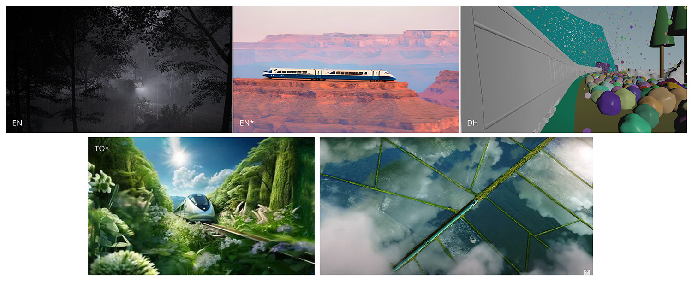

Pre-Viz day!!!
The team has created a pitch that we'll be sharing in class. In that pitch, we've included our idea, pre-viz, and a preview of the tasks in our pipeline.
We finally landed on the Amtrak concept. We chose it since there is more opportunity to show changes in the environment surrounding the train. Additionally, the Amtrak concept allows the team to explore more FX ideas.
After establishing our idea, we moved on to creating our shots. We toyed with the idea of creating an advertisement for a bullet train opperated by Amtrak. We looked at this model of a bullet train. Eventually we decided to purchase this model of Amtrak's Acela train (pictured below) that operates along the eastern seaboard (Thanks Bridget).
We created our pre-viz with a mix of Unreal Engine, Houdini, and Midjourney. I created the shot that has the snow flurries in it.
We have three shots that include FX work. Shot 1 will have rain, shot 3 will have snow, and shot 4 will have a blooming effect. Depending on complexity, we may cut the blooming effect in shot 4.
To create the rain element, we'll be creating a POP sim. In order to add more realism to the element, we'll be using some of the research that Pixar did for Toy Story 4. They explain their findings in this video (6:34 timestamp) and this article on the SideFX website.
The snow element will be created using a POP sim as well. I created a simple sim for our pre-viz. In order to quickly create the shot, I adjusted the gravity and added a pop wind in the popnet. I changed the amplitude, swirl size, pulse length, and turbulence. Once we move out of pre-viz, I'll be wedging these attributes to match reference.
Our last effect may be flowers and other vegetation blooming near the train. This effect will only be done if we have enough time. If we move forward with it, I plan on creating multi-part vellum setup. The first element I would tackle is the unraveling of the leaves. After that I would create a secondary sim that adds detail onto the previously simulated petals. Once the petals are taken care of, the stem of the flower would be animated to mimic growth.
Currently, Team Dusty is planning to work primarily in Houdini. Aspects such as backgrounds may be assembled in Unreal Engine or Nuke's 3D view.
I'm excited to hear the feedback on our idea during class today!
{kind=link}